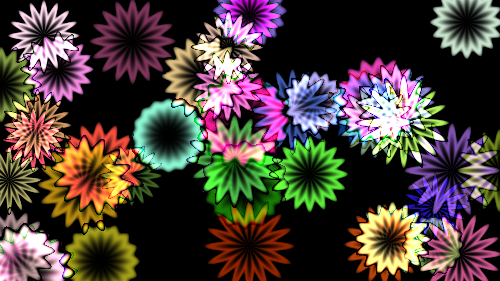
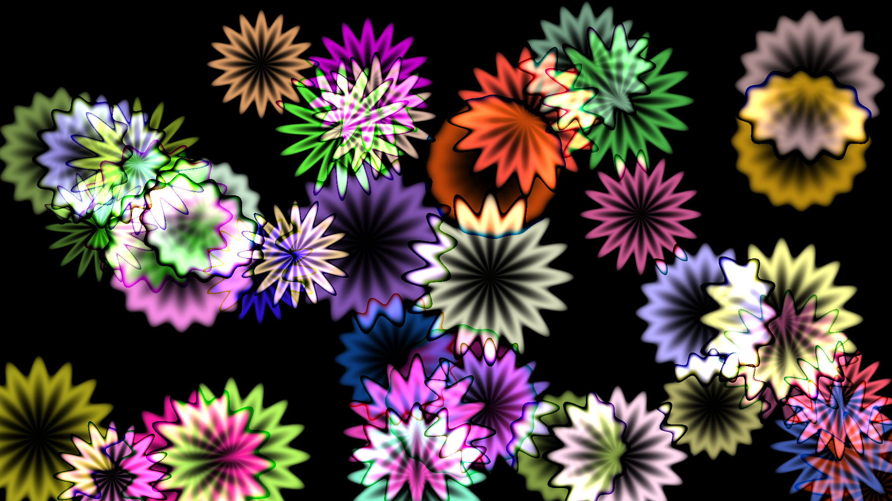
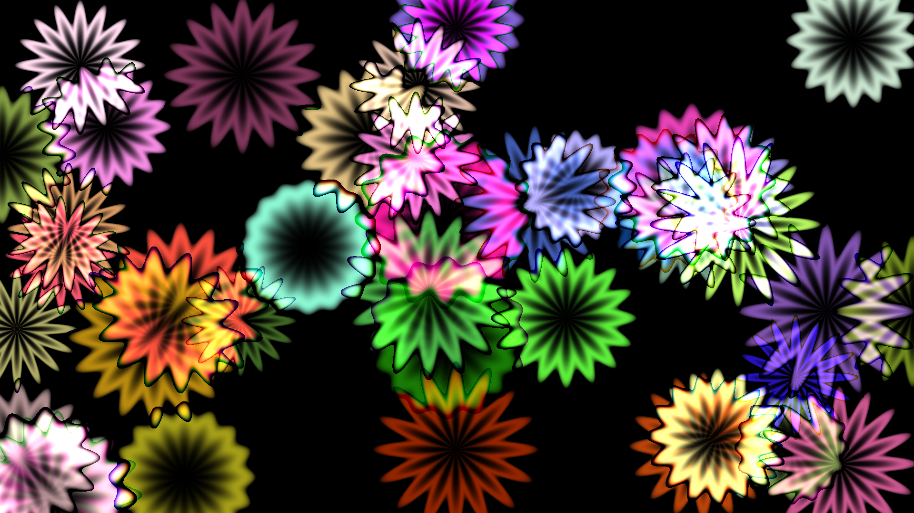
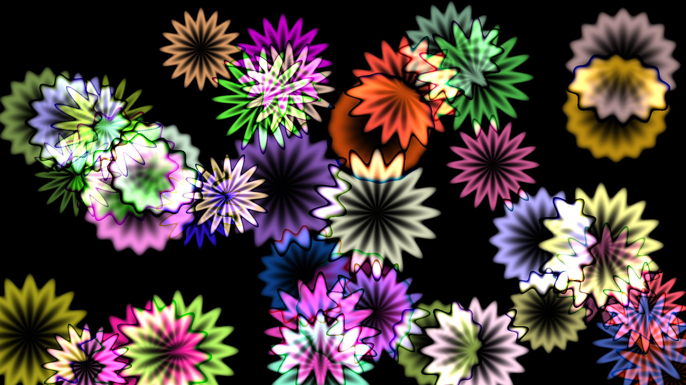

My first experiments with Processing. The more velocity a "flower" has, the more extreme petals it gets. Initially I wrote a code to generate the animation on random basis. But then I realized that before deleting original frames I can hand-pick those with the best composition. Maybe someone will find them useful.
See my other projects on xemantic.com
All the graphics licensed under Creative Commons Attribution 4.0 International license.
 


